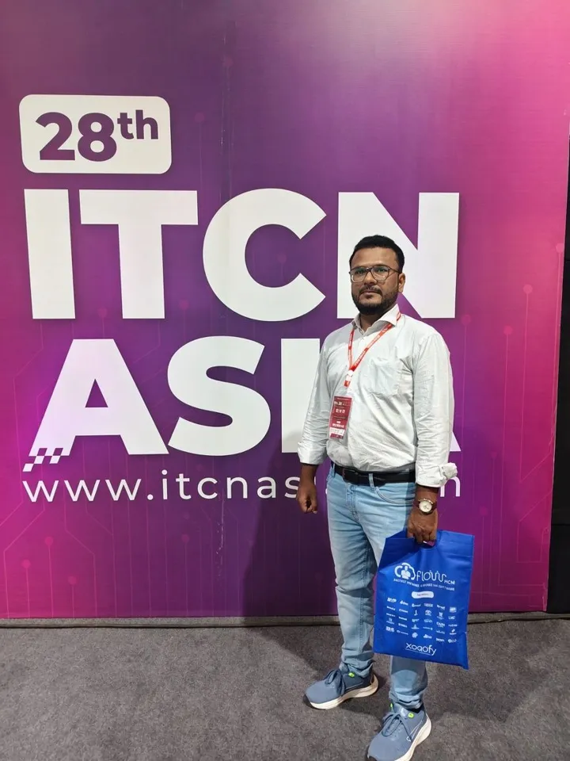
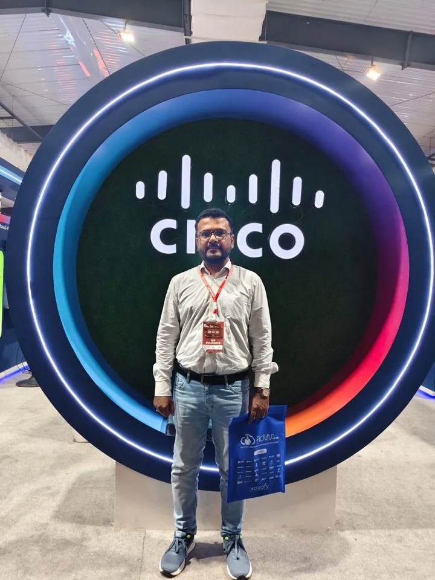

28th ITCN Asia 2026
Pakistan's largest IT and telecom exhibition and conference, three days of exhibitors and sessions across cloud, AI, cybersecurity, fintech and telecom.
Had an incredible day at the 28th ITCN Asia! What truly amazed me was the scale of global participation, not just from Pakistan, but from companies and professionals around the world. It clearly shows how the international community is taking a strong interest in Pakistan's tech market.
The landscape is changing fast. Pakistan's tech ecosystem is growing, and global players are actively expanding here. Seeing Cisco leading the charge, along with strong presence from Dell, Epson, and many others, was truly inspiring.
Proud to be part of this journey and excited for what's coming next for Pakistan's technology industry.